トレ録 使い方
自宅でやったトレーニングを、その場で残しておくための記録帳です。 スマホのブラウザで開いて、ホーム画面に追加すれば、それがインストールです。 アカウント登録はありません。サーバーもありません。記録は、あなたのスマホの中に保存されます。外に保存されたり、外に出たりすることはありません。
このページの画面は、すべて架空の例（ニックネーム「たなか」・動画の題名・種目）で撮ったものです。動画のサムネイルは「動画のサムネイル（例）」という灰色の板に置き換えています。
開く場所： https://memory2meaning-lgtm.github.io/toreroku/
目次
- 入れ方（iPhone／Android）
- はじめて開いたときの三つの問い
- トレーニングメニューを作る
- やった日に記録する
- 過去の日を直す
- ふだんは外す
- 記録を残す（書き出し・機種変更）
- 相棒とニックネーム
- よくある質問
1. 入れ方
スマホのブラウザで、上の URL を開きます。開けたら、ホーム画面に追加してください。見た目のためではなく、記録が消えないための手順です。
iPhone（Safari）
- 画面下の 共有（四角から矢印が出ている印）を押す
- ホーム画面に追加 を選ぶ
- 右上の 追加 を押す
Android（Chrome）
- 右上の ⋮（点が縦に三つ）を押す
- アプリをインストール（または ホーム画面に追加）を選ぶ
- インストール を押す
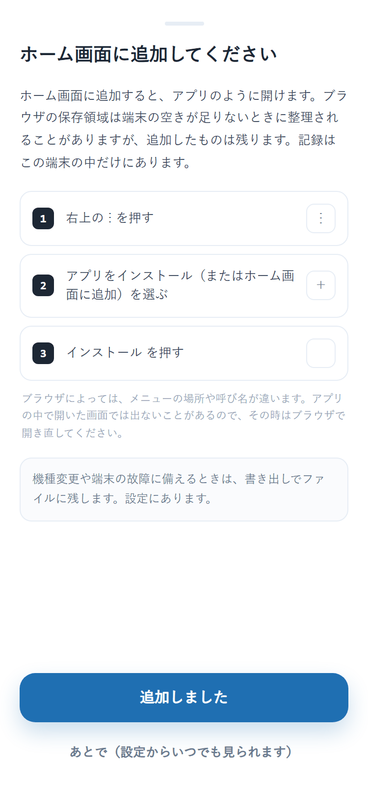
アプリの中でも、この案内が出ます（Android で開いたときの文面です）。あとで見たいときは、設定 → ホーム画面に追加 から、いつでも開けます。
Android では、ホーム画面に追加すると YouTube の共有先に「トレ録」が出るようになります。動画を見ながら共有 → トレ録 と押すと、その動画からトレーニングメニューを作れます。
2. はじめて開いたときの三つの問い
はじめて開くと、三つだけ聞かれます。どれも飛ばせますし、あとから 設定 で変えられます。
| 聞かれること | 答え方 | |
|---|---|---|
| 1 / 3 | 記録がこの端末の中に残ること | 読んで つづける |
| 2 / 3 | ニックネーム（任意） | 書いても、書かなくてもかまいません |
| 3 / 3 | 相棒（絵を一つ） | 選ばないのが既定です。選ぶなら絵を押すだけ |
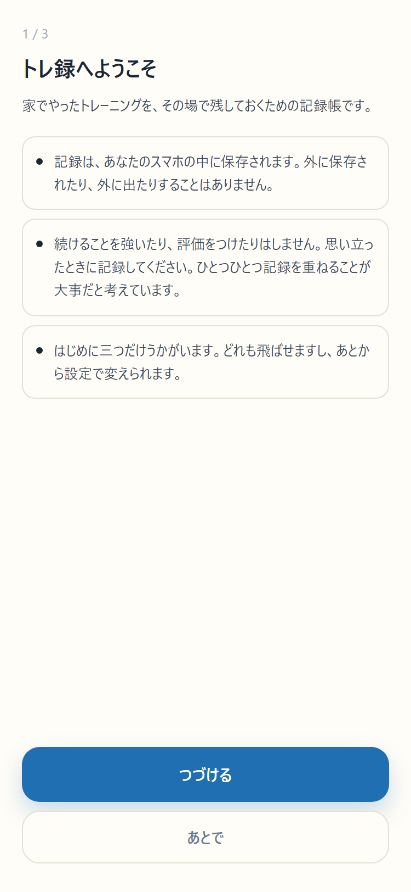
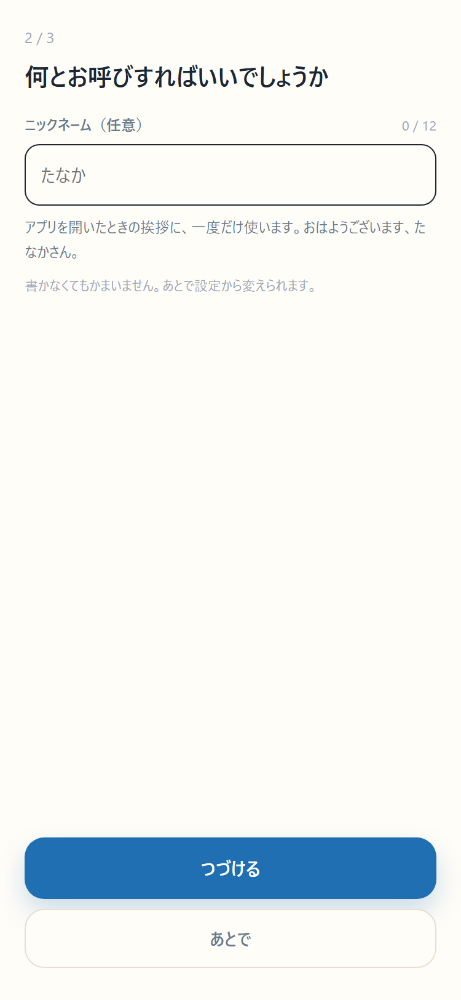
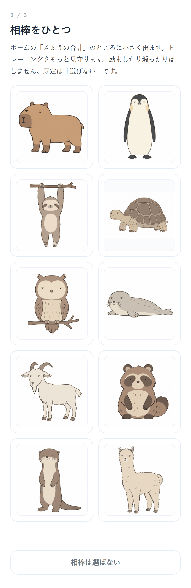
三つ答えると、ホーム画面に追加の案内が出て、そのあと最初の画面（ホーム）になります。
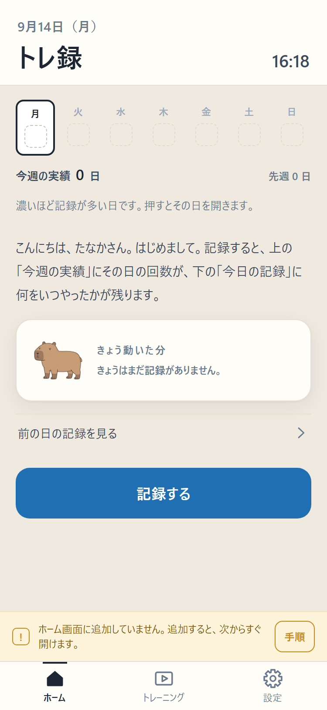
ホームには、今週の実績（曜日ごとの四角）、きょうの合計、記録する のボタン、きょうの記録が並びます。ホームは見るための画面で、記録は 記録する から行います。
3. トレーニングメニューを作る
トレーニングメニューは、動画の URL と種目をまとめたものです。1つ作ると、やった日に丸を押すだけで残ります。作り方は三つあります。
3-1. 動画の URL を貼る（いちばん簡単）
- ホームの 記録する を押す（まだ1つも無いときは、貼る欄がそのまま出ます）
- YouTube で動画を開き、共有 から URL をコピーする
- 欄に貼って、URL から題名を取って作る を押す
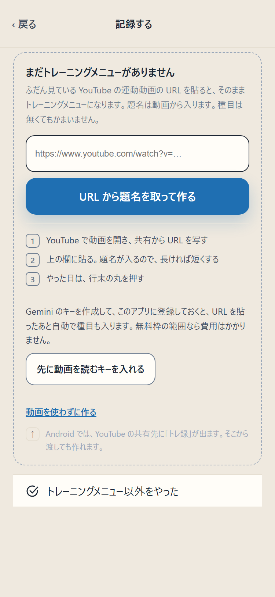
題名は動画から自動で入ります。長ければ 短くする、自分で付けたければ 消して自分で書く を押します。種目は無くてもかまいません。右上の 保存 で出来上がりです。
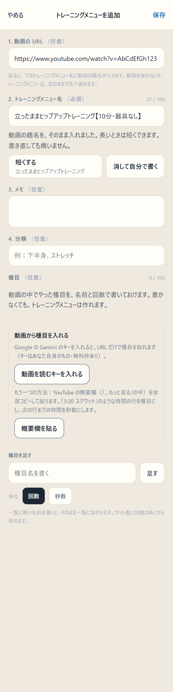
2つ目からは、下の トレーニング のタブを開き、一覧のいちばん下の ＋ トレーニングメニューを追加する から同じように作ります。
3-2. 概要欄を貼って種目にする
動画の概要欄に「3:20 スクワット 12回」のような時間つきの行があるときは、それを種目にできます。
- 編集画面の 概要欄を貼る を押す
- YouTube の概要欄の文をコピーして貼る
- 貼った文から種目にする を押す
時間の行が種目になり、行末の「12回」は回数に、次の行までの時間の差は秒数になります。「はじめに」「まとめ」のような行は除かれます。入った種目の名前・回数・秒数は、その場で直せます。
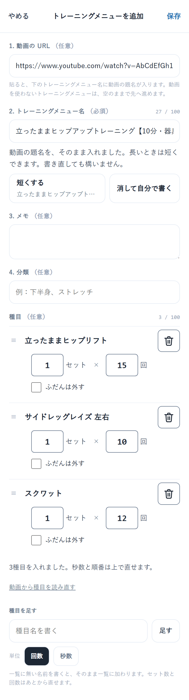
3-3. 動画を AI に読ませる（自分の Gemini のキーを使う）
Google の Gemini に動画そのものを読ませて、種目・セット数・回数か秒数を取り出す方法です。使うには、あなた自身の Gemini の API キーが要ります。
- 設定 → 動画を読むキー を開く
- Google AI Studio でキーを作る のリンクから、キーを作る（Google のアカウントが要ります。無料枠があります）
- 作ったキーを欄に貼り、このキーにする を押す
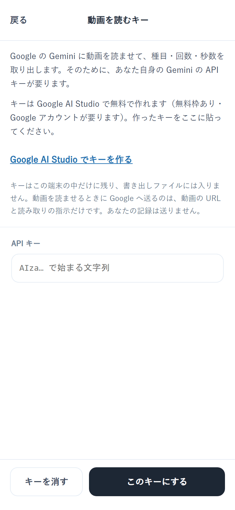
キーを入れておくと、URL を貼ったあとに 動画を AI に読ませて種目にする が使えます。
- キーはこの端末の中にだけ残ります。書き出しファイルには入りません
- 読ませるときに Google へ送るのは、動画の URL と読み取りの指示だけです。あなたの記録は送りません
- 読み取りは推測です。入った種目の名前・回数・秒数は、編集画面で確かめてください
- キーを入れなければ、この通信は一切起きません
4. やった日に記録する
4-1. 全部やった日：行末の丸を押す
ホームの 記録する を押すと、トレーニングメニューの一覧が出ます。やったメニューの行末の丸を押すだけです。押すと丸が塗られて時刻が入り、ホームに戻ります。
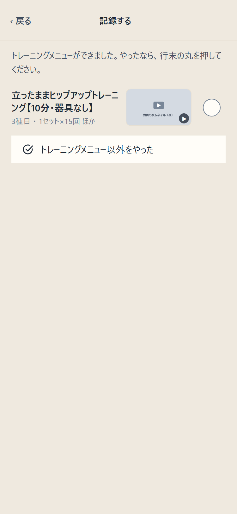
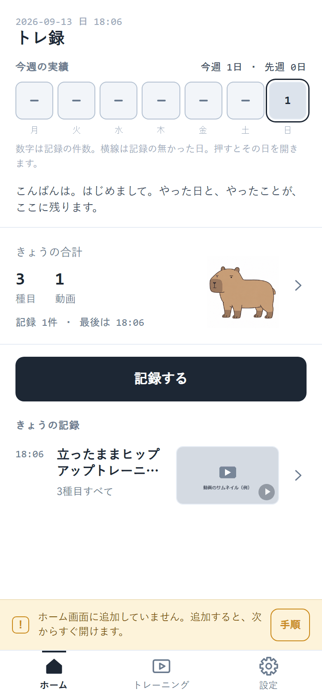
4-2. 一部だけやった日：行を押して種目を選ぶ
丸ではなく、行そのものを押すと、種目の一覧が開きます。やった種目だけに印を付けて、下の 選んだ○種目を記録する を押します。トレーニングメニューそのものは変わりません。
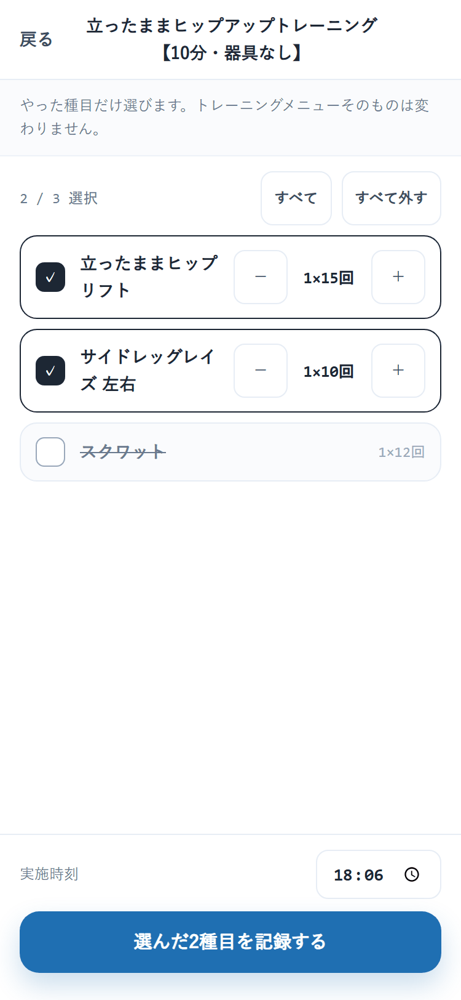
4-3. トレーニングメニューに無いものをやった日
一覧のいちばん下の トレーニングメニュー以外をやった を押します。種目の名前を書いて 足す か、よく記録している種目から 足す を押し、選んだ○種目を記録 で残ります。
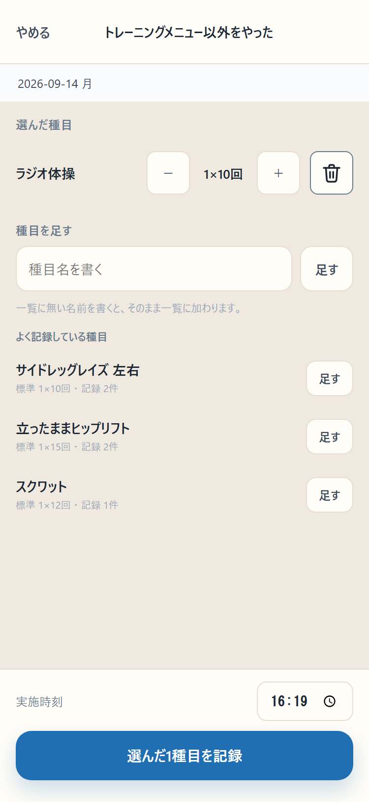
手で選んだ記録は、1日に1つです。同じ日にもう一度開くと、さきほどの種目が入った状態で開き、足した分が加わります。
5. 過去の日を直す
ホームの 今週の実績 の四角を押すと、その日から前の記録の一覧（履歴）が開きます。直したい記録の行を押すと 記録を修正 の画面になります。
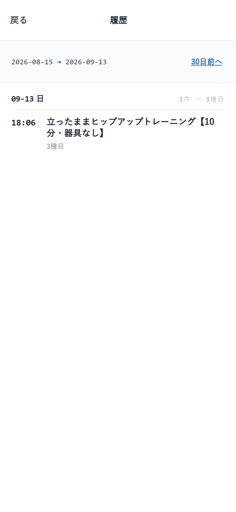
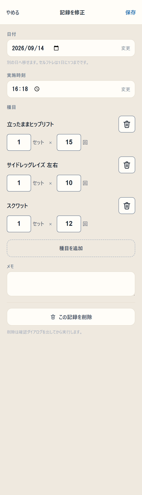
- 日付・実施時刻 を変えられます（別の日へ移せます）
- 種目のセット数・回数を直す、種目を消す、種目を追加する
- メモ を書く
- いちばん下の この記録を削除 で消す（確認が出てから消えます）
きょうの記録は、ホームの きょうの記録 の行を押しても同じ画面が開きます。
6. ふだんは外す
動画の概要欄や AI から自動で入った種目には、ふだんは外す の印が付けられます。「動画には入っているけれど、自分はこれをやらない」という種目のためのものです。
- トレーニング のタブで、メニューの行を押して編集画面を開く
- 種目の下の ふだんは外す に印を付けて 保存
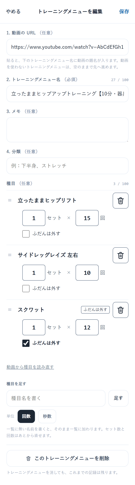
印を付けた種目は、行末の丸を押したときの記録に入りません。「一部だけ」の画面では下の方に寄せて出るので、その日だけやったときはそこで選べます。印はいつでも外せます。
7. 記録を残す（書き出し・機種変更）
設定 → 記録を残す を開きます。
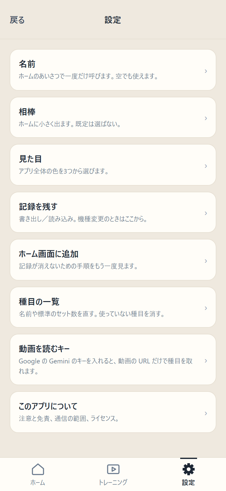
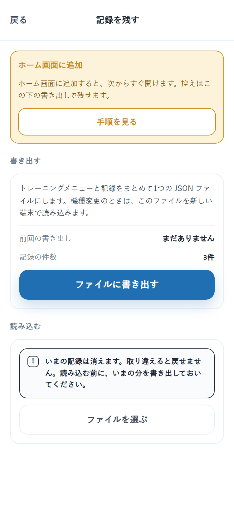
書き出す
ファイルに書き出す を押すと、トレーニングメニューと記録をまとめた1つの JSON ファイルができます。ときどき書き出して、手元に残しておくのが確実です。
読み込む（機種変更）
新しいスマホでトレ録を開き、設定 → 記録を残す → ファイルを選ぶ で、書き出したファイルを選びます。読み込むと、いまの記録は消えてファイルの中身に置き換わります。読み込む前に、いまの分を書き出しておいてください。
書き出したファイルに、Gemini のキーは入りません。
8. 相棒とニックネーム
設定 → 相棒 で、絵を選び直したり、選ばないに戻したりできます。相棒はホームの右下に小さく出て、ときどきまばたきします。名前はありません。
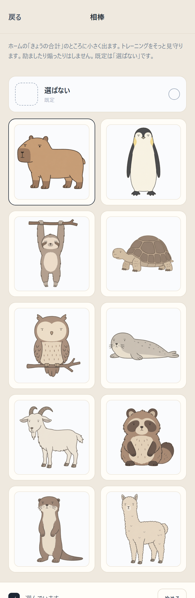
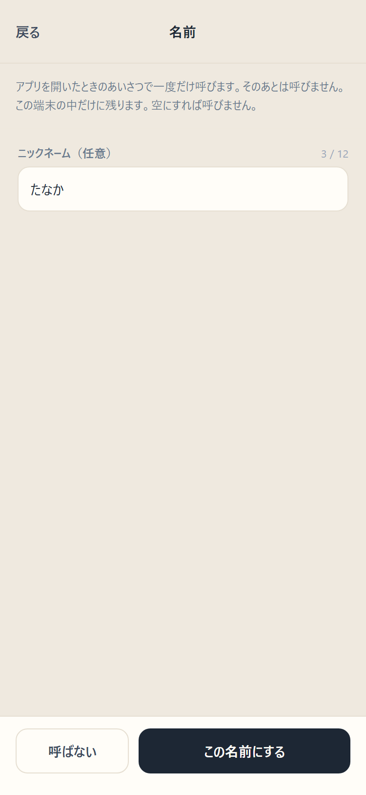
設定 → 名前 でニックネームを変えられます。ニックネームは、アプリを開いたときのあいさつで一度だけ呼びます。そのあとは呼びません。
ホームの上には、相棒からの一言が1行だけ出ます。時間帯のあいさつ、はじめての日、その日まだ記録が無いこと、久しぶりに開いたこと、今週の日数など、見たことを言うだけです。
9. よくある質問
記録はどこにありますか。 あなたのスマホの中（ブラウザの保存領域）だけにあります。作者を含め、ほかの誰にも見えません。
記録が消えることはありますか。 ホーム画面に追加していれば、ふつうの使い方で消えることはありません。iPhone の Safari には「7日間使わないとブラウザに保存したデータを消す」決まりがありますが、ホーム画面に追加したアプリはその対象外です。念のため、ときどき 設定 → 記録を残す で書き出しておくと確実です。
費用はかかりますか。 かかりません。アプリは無料です。Gemini のキーを使う場合も、Google の無料枠の範囲なら費用はかかりません。
動画は保存されますか。 されません。動画は YouTube で開きます。トレ録が持つのは URL と題名だけです。
外に送られる情報はありますか。 記録は送りません。アプリが外と通信するのは、動画のサムネイルを表示するとき（YouTube）、URL から題名を取るとき（YouTube）、そして自分でキーを入れて動画を AI に読ませるとき（Google）の三つだけです。
点数や連続日数は出ますか。 出ません。やった日と、やったことが、そのまま残るだけです。
別のスマホでも同じ記録を見られますか。 自動では同期しません。設定 → 記録を残す で書き出したファイルを、別のスマホで読み込んでください。
アプリを消したら記録はどうなりますか。 ホーム画面のアイコンを消しても、ブラウザの保存領域に残っていれば、もう一度開くと戻ります。ブラウザのサイトデータを消すと記録も消えます。消す前に書き出してください。
このアプリは MIT ライセンスで公開しています。中身は https://github.com/memory2meaning-lgtm/toreroku にあります。